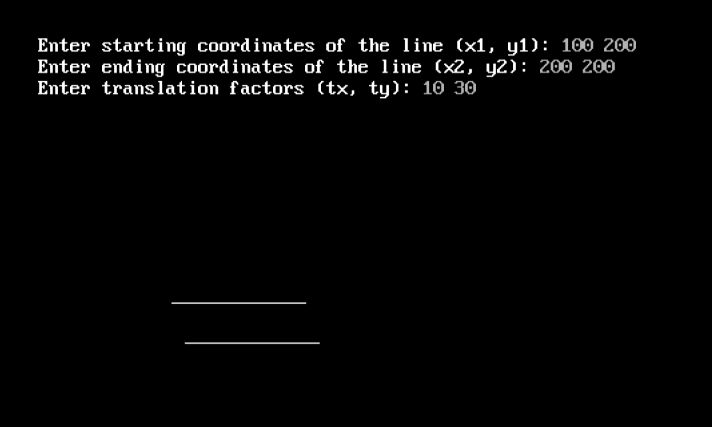

Program No. 1
Write a program to draw a line using DDA algorithm.
#include < stdio.h >
#include < graphics.h >
#include < math.h >
float round(float a);
void main()
{
int gd=DETECT,gm;
// gd=graphics driver (detects best graphics driver and assigns it as default, gm=graphics
int x1,y1,x2,y2,steps,k;
float xincr,yincr,x,y,dx,dy;
printf("enter x1,y1");
scanf("%d%d",&x1,&y1);
printf("enter x2,y2");
scanf("%d%d",&x2,&y2);
initgraph(&gd,&gm,"c:\\turboc3\\BGI");//initializes the graph
dx=x2-x1;
dy=y2-y1;
if(abs(dx)>abs(dy))
steps=abs(dx);
else
steps=abs(dy);
xincr=dx/steps;
yincr=dy/steps;
x=x1;
y=y1;
for(k=1;k<=steps;k++)
{
delay(100);//for seeing the line drawing process slowly.
x+=xincr;
y+=yincr;
putpixel(round(x),round(y),WHITE);
}
outtextxy(200,20,"DDA"); // for printing text at desired screen location.
outtextxy(x1+5,y1-5,"(x1,y1)");
outtextxy(x2+5,y2+5,"(x2,y2)");
getch();
closegraph(); // closes the graph and comes back to previous graphic mode.
}
float round(float a)
{
int b=a+0.5;
return b;
}

Program No. 2
Write a program to draw the line using Bresenham's algorithm
#include < stdio.h >
#include < conio.h >
#include < graphics.h >
void main()
{
int x,y,x1,y1,x2,y2,p,dx,dy;
int gd=DETECT,gm;
initgraph(&gd,&gm,"C:\\TurboC3\\BGI");
printf("\nEnter the x-coordinate of the first point ::");
scanf("%d",&x1);
printf("\nEnter the y-coordinate of the first point ::");
scanf("%d",&y1);
printf("\nEnter the x-coordinate of the second point ::");
scanf("%d",&x2);
printf("\nEnter the y-coordinate of the second point ::");
scanf("%d",&y2);
x=x1;
y=y1;
dx=x2-x1;
dy=y2-y1;
putpixel(x,y,2);
p=(2*dy-dx);
while(x<=x2)
{
if(p<0)
{
x=x+1;
p=p+2*dy;
}
else
{
x=x+1;
y=y+1;
p=p+(2*dy)-(2*dx);
}
putpixel(x,y,7);
}
getch();
closegraph();
}

Program No. 3
Write a program to draw the circle using Bresenham's algorithm.
#include < dos.h >
#include < stdio.h >
#include < conio.h >
#include < graphics.h >
void draw_circle(int,int,int);
void symmetry(int,int,int,int);
void main()
{
int xc,yc,R;
int gd=DETECT,gm;
initgraph(&gd,&gm,"C:\\TurboC3\\BGI");
printf("Enter the center of the circle:\n");
printf("Xc =");
scanf("%d",&xc);
printf("Yc =");
scanf("%d",&yc);
printf("Enter the radius of the circle :");
scanf("%d",&R);
draw_circle(xc,yc,R);
getch();
closegraph();
}
void draw_circle(int xc,int yc,int rad)
{
int x = 0;
int y = rad;
int p = 1-rad;
symmetry(x,y,xc,yc);
for(x=0;y>x;x++)
{
if(p< 0)
p += 2*x + 3;
else
{
p += 2*(x-y) + 5;
y--;
}
symmetry(x,y,xc,yc);
delay(50);
}
}
void symmetry(int x,int y,int xc,int yc)
{
putpixel(xc+x,yc-y,GREEN);
delay(50);
putpixel(xc+y,yc-x, GREEN);
delay(50);
putpixel(xc+y,yc+x, GREEN);
delay(50);
putpixel(xc+x,yc+y, GREEN);
delay(50);
putpixel(xc-x,yc+y, GREEN);
delay(50);
putpixel(xc-y,yc+x, GREEN);
delay(50);
putpixel(xc-y,yc-x, GREEN);
delay(50);
putpixel(xc-x,yc-y, GREEN);
delay(50);
}

Program No. 4
Write a program to draw the circle using Mid Point algorithm.
#include < stdio.h >
#include < graphics.h >
void midp(int r, int xc,int yc)
{
int x,y;
float d;
d=1.25-r;
x=0;
y=r;
do
{
if(d < 0)
{
x=x+1;
d=d+2*x+1;
}
else
{
x=x+1;
y=y-1;
d=d+2*x-2*y+10;
}
putpixel(xc+x,yc+y,5);
putpixel(xc-y,yc-x,5);
putpixel(xc+y,yc-x,5);
putpixel(xc-y,yc+x,5);
putpixel(xc+y,yc+x,5);
putpixel(xc-x,yc-y,5);
putpixel(xc+x,yc-y,5);
putpixel(xc-x,yc+y,5);
}while(x < y);
}
int main()
{
int gd=DETECT,gm;
int xc,yc,r;
printf("Enter center and radius");
scanf("%d%d%d",&xc,&yc,&r);
initgraph(&gd,&gm,"..\\BGI\\");
midp(r,xc,yc);
delay(1500);
getch();
closegraph();
}
Program No. 5
Write a program to draw ellipse using Mid Point algorithm.
#include < stdio.h >
#include < conio.h >
#include < graphics.h >
#include < math.h >
void disp();
float x,y;
int xc,yc;
void main()
{
int gd=DETECT,gm;
int rx,ry;
float p1,p2;
clrscr();
initgraph(&gd,&gm,"C:\\TurboC3\\BGI");
printf("Enter the center point :");
scanf("%d%d",&xc,&yc);
printf("Enter the value for Rx and Ry :");
scanf("%d%d",&rx,&ry);
x=0;
y=ry;
disp();
p1=(ry*ry)-(rx*rx*ry)+(rx*rx)/4;
while((2.0*ry*ry*x)<=(2.0*rx*rx*y))
{
x++;
if(p1<=0)
p1=p1+(2.0*ry*ry*x)+(ry*ry);
else
{
y--;
p1=p1+(2.0*ry*ry*x)-(2.0*rx*rx*y)+(ry*ry);
}
disp();
x=-x;
disp();
x=-x;
}
x=rx;
y=0;
disp();
p2=(rx*rx)+2.0*(ry*ry*rx)+(ry*ry)/4;
while((2.0*ry*ry*x)>(2.0*rx*rx*y))
{
y++;
if(p2>0)
p2=p2+(rx*rx)-(2.0*rx*rx*y);
else
{
x--;
p2=p2+(2.0*ry*ry*x)-(2.0*rx*rx*y)+(rx*rx);
}
disp();
y=-y;
disp();
y=-y;
}
getch();
closegraph();
}
void disp()
{
delay(50);
putpixel(xc+x,yc+y,WHITE);
putpixel(xc-x,yc+y,WHITE);
putpixel(xc+x,yc-y,WHITE);
putpixel(xc-x,yc-y,WHITE);
}

Program No. 6
Write a program for translation of a line.
#include < stdio.h >
#include < conio.h >
#include < graphics.h >
void drawLine(int x1, int y1, int x2, int y2) {
line(x1, y1, x2, y2);
}
void translateLine(int x1, int y1, int x2, int y2, int tx, int ty) {
int newX1 = x1 + tx;
int newY1 = y1 + ty;
int newX2 = x2 + tx;
int newY2 = y2 + ty;
drawLine(newX1, newY1, newX2, newY2);
}
void main() {
int gd = DETECT, gm;
int x1 , y1 , x2 , y2 , tx , ty;
initgraph(&gd, &gm, "c:\\turboc3\\BGI");
printf("Enter starting coordinates of the line (x1, y1): ");
scanf("%d %d", &x1, &y1);
printf("Enter ending coordinates of the line (x2, y2): ");
scanf("%d %d", &x2, &y2);
drawLine(x1, y1, x2, y2);
printf("Enter translation factors (tx, ty): ");
scanf("%d %d", &tx, &ty);
translateLine(x1, y1, x2, y2, tx, ty); // Draw translated line
getch();
closegraph();
}

Program No. 7
Write a program for rotation of a triangle.
#include < stdio.h >
#include < graphics.h >
#include < math.h >
void main()
{
int gd=0,gm,x1,y1,x2,y2,x3,y3;
double s,c, angle;
initgraph(&gd, &gm, "C:\\TURBOC3\\BGI");
setcolor(RED);
printf("Enter coordinates of triangle: ");
scanf("%d%d%d%d%d%d",&x1,&y1,&x2,&y2, &x3, &y3);
setbkcolor(WHITE);
cleardevice();
line(x1,y1,x2,y2);
line(x2,y2, x3,y3);
line(x3, y3, x1, y1);
getch();
setbkcolor(BLACK);
printf("Enter rotation angle: ");
scanf("%lf", &angle);
setbkcolor(WHITE);
c = cos(angle *M_PI/180);
s = sin(angle *M_PI/180);
x1 = floor(x1 * c + y1 * s);
y1 = floor(-x1 * s + y1 * c);
x2 = floor(x2 * c + y2 * s);
y2 = floor(-x2 * s + y2 * c);
x3 = floor(x3 * c + y3 * s);
y3 = floor(-x3 * s + y3 * c);
cleardevice();
line(x1, y1 ,x2, y2);
line(x2,y2, x3,y3);
line(x3, y3, x1, y1);
getch();
closegraph();
}
Program No. 8
Write a program for scaling of a rectangle.
#include < stdio.h >
#include < conio.h >
#include < graphics.h >
#include < process.h >
#include < math.h >
int x1, y1, x2, y2, x3, y3,x4,y4;
void draw();
void scale();
void main()
{
int gd = DETECT, gm;
int c;
clrscr();
initgraph(&gd, &gm, "c:\\turboc3\\BGI");
printf("Enter the 1st point for the ractangle:");
scanf("%d%d", &x1, &y1);
printf("Enter the 2nd point for the ractangle:");
scanf("%d%d", &x2, &y2);
printf("Enter the 3rd point for the ractangle:");
scanf("%d%d", &x3, &y3);
printf("Enter the 4th point for the ractangle:");
scanf("%d%d", &x4, &y4);
draw();
scale();
}
void draw()
{
line(x1, y1, x2, y2);
line(x2, y2, x3, y3);
line(x3, y3, x4, y4);
line(x4, y4, x1, y1);
}
void scale()
{
int x, y;
int mx, my;
int a1, a2, a3,a4, b1, b2, b3,b4;
printf("Enter the scaling factors (x y): ");
scanf("%d%d", &x, &y);
mx = (x1 + x2 + x3 + x4) / 4;
my = (y1 + y2 + y3+y4) / 4;
cleardevice();
a1 = mx + (x1 - mx) * x;
b1 = my + (y1 - my) * y;
a2 = mx + (x2 - mx) * x;
b2 = my + (y2 - my) * y;
a3 = mx + (x3 - mx) * x;
b3 = my + (y3 - my) * y;
a4 = mx + (x4 - mx) * x;
b4 = my + (y4 - my) * y;
line(a1, b1, a2, b2);
line(a2, b2, a3, b3);
line(a3, b3, a4, b4);
line(a4, b4, a1, b1);
draw();
getch();
}